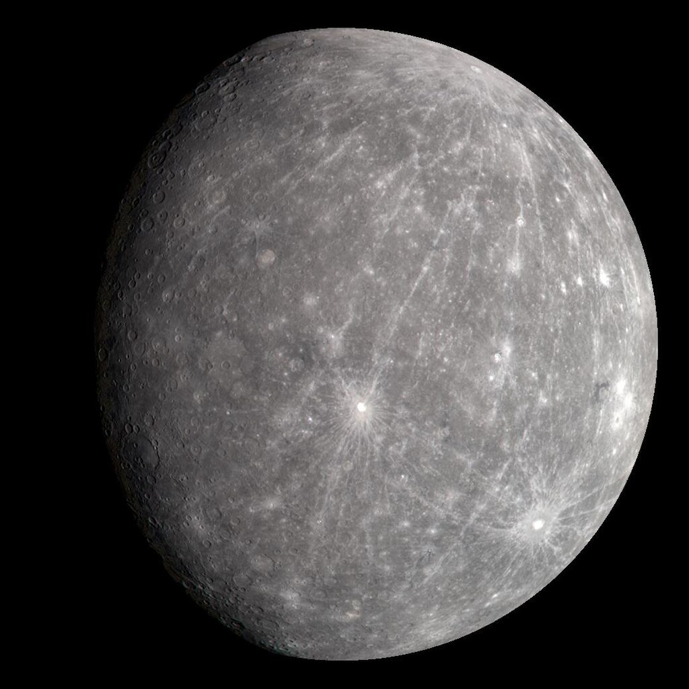

Mercury: The Innermost Planet
Mercury is the smallest planet in our solar system and the closest to the Sun. It has a heavily cratered surface, similar to our Moon. Due to its proximity to the Sun, Mercury experiences extreme temperature variations. Its atmosphere is very thin, composed primarily of hydrogen and helium.
Mercury has no moons and a weak magnetic field. One of its most interesting features is the Caloris Basin, a giant impact crater. Despite its harsh conditions, Mercury is a fascinating world that has captivated scientists for centuries. Future missions may help us learn more about its formation and evolution.
Mercury is the first planet from the Sun and the smallest in the Solar System. In English, it is named after the ancient Roman god Mercurius (Mercury), god of commerce and communication, and the messenger of the gods. Mercury is classified as a terrestrial planet, with roughly the same surface gravity as Mars. The surface of Mercury is heavily cratered, as a result of countless impact events that have accumulated over billions of years. Its largest crater, Caloris Planitia, has a diameter of 1,550 km (960 mi), which is about one-third the diameter of the planet (4,880 km or 3,030 mi). Similarly to the Earth's Moon, Mercury's surface displays an expansive rupes system generated from thrust faults and bright ray systems formed by impact event remnants.

Mercury's sidereal year (88.0 Earth days) and sidereal day (58.65 Earth days) are in a 3:2 ratio. This relationship is called spin–orbit resonance, and sidereal here means "relative to the stars". Consequently, one solar day (sunrise to sunrise) on Mercury lasts for around 176 Earth days: twice the planet's sidereal year. This means that one side of Mercury will remain in sunlight for one Mercurian year of 88 Earth days; while during the next orbit, that side will be in darkness all the time until the next sunrise after another 88 Earth days.
Combined with its high orbital eccentricity, the planet's surface has widely varying sunlight intensity and temperature, with the equatorial regions ranging from −170 °C (−270 °F) at night to 420 °C (790 °F) during sunlight. Due to the very small axial tilt, the planet's poles are permanently shadowed. This strongly suggests that water ice could be present in the craters. Above the planet's surface is an extremely tenuous exosphere and a faint magnetic field that is strong enough to deflect solar winds. Mercury has no natural satellite.
As of the early 2020s, many broad details of Mercury's geological history are still under investigation or pending data from space probes. Like other planets in the Solar System, Mercury was formed approximately 4.5 billion years ago. Its mantle is highly homogeneous, which suggests that Mercury had a magma ocean early in its history, like the Moon. According to current models, Mercury may have a solid silicate crust and mantle overlying a solid outer core, a deeper liquid core layer, and a solid inner core. There are many competing hypotheses about Mercury's origins and development, some of which incorporate collision with planetesimals and rock vaporization.
Mercury to scale among the Inner Solar System planetary-mass objects beside the Sun, arranged by the order of their orbits outward from the Sun (from left: Mercury, Venus, Earth, the Moon, Mars and Ceres)
Mercury is one of four terrestrial planets in the Solar System, which means it is a rocky body like Earth. It is the smallest planet in the Solar System, with an equatorial radius of 2,439.7 kilometres (1,516.0 mi).[4] Mercury is also smaller—albeit more massive—than the largest natural satellites in the Solar System, Ganymede and Titan. Mercury consists of approximately 70% metallic and 30% silicate material.[26]
Internal structure
Mercury's internal structure and magnetic field
Mercury appears to have a solid silicate crust and mantle overlying a solid, metallic outer core layer, a deeper liquid core layer, and a solid inner core.[27][28] The composition of the iron-rich core remains uncertain, but it likely contains nickel, silicon and perhaps sulfur and carbon, plus trace amounts of other elements.[29] The planet's density is the second highest in the Solar System at 5.427 g/cm3, only slightly less than Earth's density of 5.515 g/cm3.[4] If the effect of gravitational compression were to be factored out from both planets, the materials of which Mercury is made would be denser than those of Earth, with an uncompressed density of 5.3 g/cm3 versus Earth's 4.4 g/cm3.[30] Mercury's density can be used to infer details of its inner structure. Although Earth's high density results appreciably from gravitational compression, particularly at the core, Mercury is much smaller and its inner regions are not as compressed. Therefore, for it to have such a high density, its core must be large and rich in iron.[31]
The radius of Mercury's core is estimated to be 2,020 ± 30 km (1,255 ± 19 mi), based on interior models constrained to be consistent with a moment of inertia factor of 0.346±0.014.[9][32] Hence, Mercury's core occupies about 57% of its volume; for Earth this proportion is 17%. Research published in 2007 suggests that Mercury has a molten core.[33][34] The mantle-crust layer is in total 420 km (260 mi) thick.[35] Based on data from the Mariner 10 and MESSENGER missions, in addition to Earth-based observation, Mercury's crust is estimated to be 35 km (22 mi) thick.[36][37] However, this model may be an overestimate and the crust could be 26 ± 11 km (16.2 ± 6.8 mi) thick based on an Airy isostacy model.[38] One distinctive feature of Mercury's surface is the presence of numerous narrow ridges, extending up to several hundred kilometers in length. It is thought that these were formed as Mercury's core and mantle cooled and contracted at a time when the crust had already solidified